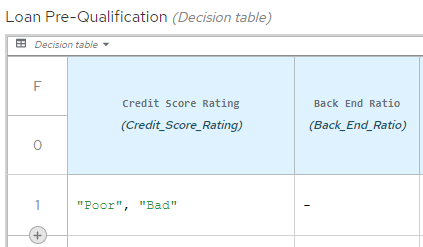
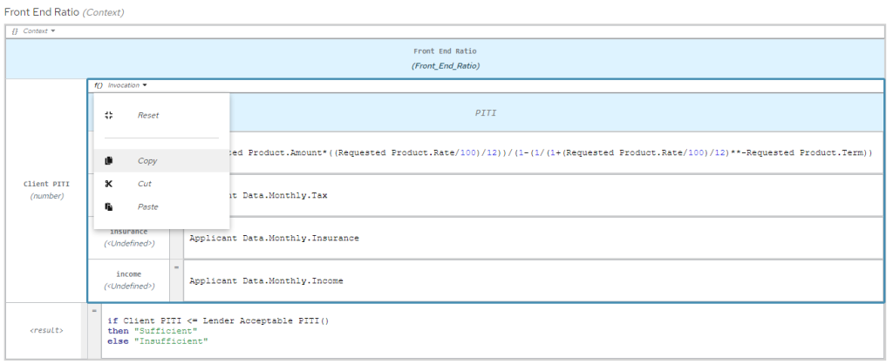
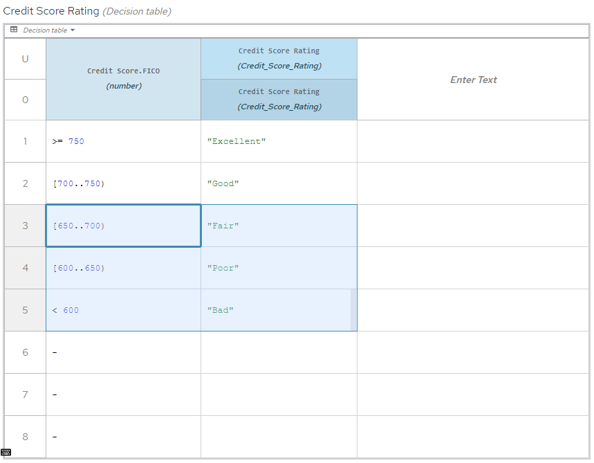
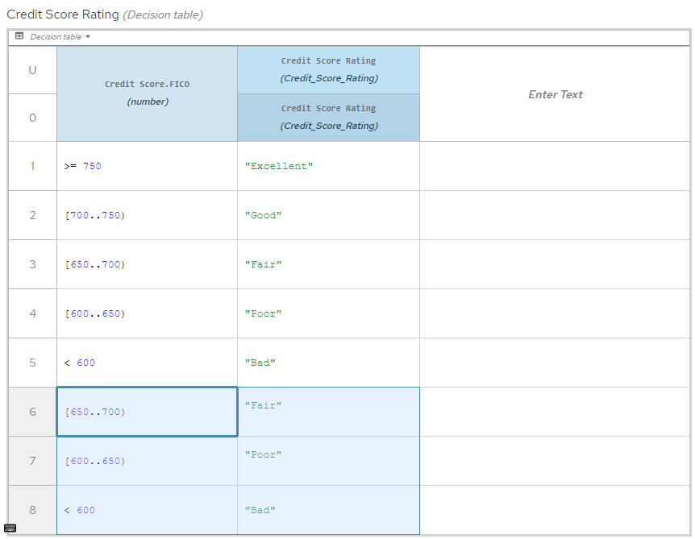
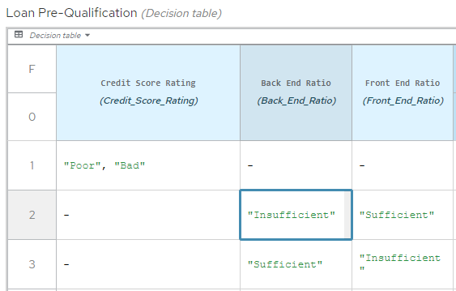
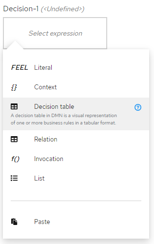
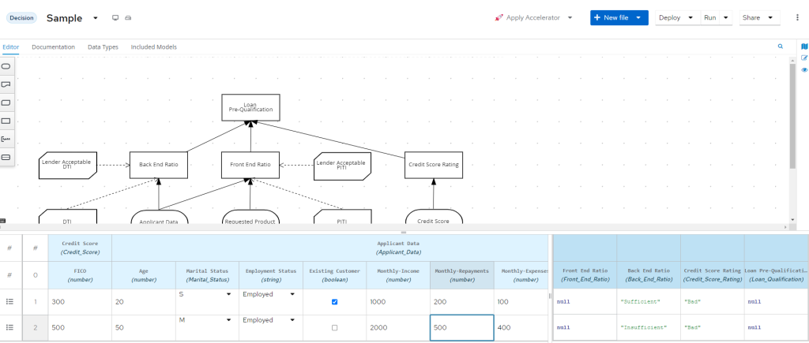

New DMN boxed expression editor
We’re excited to announce the completion of the new generation of the Boxed Expression editor!
We previously announced the beginning of this process some time ago, if you are a regular blog visitor you should remember that. During that time, we made the new component available on the Alpha version, giving the user the choice to use the stable version or experiment with the new one. During that phase, we received a lot of comments and suggestions to improve more the component, thanks to anyone involved!
DMN Modernization
The new version of the boxed expression editor represents the first step towards the ultimate goal of the DMN Editor modernization, which will include additional refactoring, technology updates, and general performance and usability improvements!
With the kie-tools 0.28.0 release, we are confident that the new boxed expression editor reached a good level of usability improvements.
We tested the new component and summarized the unfinished tasks and the next features in this ticket. However, we are sure similar huge refactoring needs huge help from community members testing and giving feedback. So feel free to report a new issue or contact us on zulip chat.
Inline add rows/columns
With this addition, users do not need to open the context menu and decide if they want to add rows or columns. Row leading cells or header menu cells display a small plus icon on hovering them. Once this plus icon is clicked, a row or column is added. Please notice the small plus icon in the bottom left corner of the picture below.

Copy/cut/paste entire expressions
With this addition, users should be more productive in implementing similar expressions. Often it is a case users implement more expressions with just small differences.

In the screenshot above, the user is copying the whole ‘Invocation’ expression. The same can be done for a whole root ‘Context’ expression from the screenshot. Once expression is copied or cut, user can invoke the same context menu over a target cell and click the ‘Paste’ option.
The new selection mechanism
With this addition, we bring user experience known from other grid/table editors, where users can select cells simply by dragging a rectangle over the desired area. In combination with copy and paste feature, it can be a very productive way to design a decision table. Imagine a scenario like below.

Then simply press ‘Ctrl + S’, select the target top left cell, and press ‘Ctrl + V’ (shortcuts may differ across platforms) resulting in a decision table like below.

Resizing cells
From now on, the user can resize cells using the new resizer bar. It is shown once a cell has hovered. Users can simply drag and drop it to resize a cell. Please notice the grey bar in the picture below next to the ‘Insufficient’ string.

The new inline descriptions
With this addition, we are trying to make our tool more self documented. Especially for new users different hit policies and expression types may be confusing or not clear enough. We believe users will be more productive when they find some documentation for them directly in the tool.

The DMN Runner table improved experience
You will notice we are now reusing the box expression component for DMN Runner tabular view. That is a great step in unifying user experience during interacting with our tool in more places. We are going to bring the same component also for SceSim test scenarios, but it will be a topic for the next blog posts. In the meantime, feel free to try DMN Runner tabular view.
